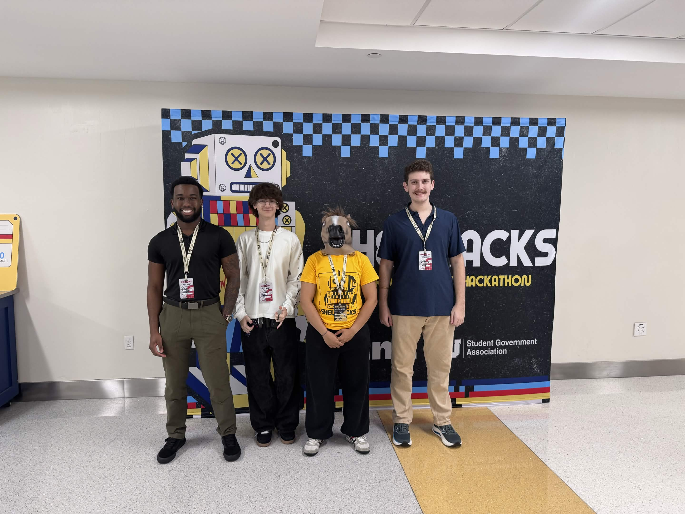
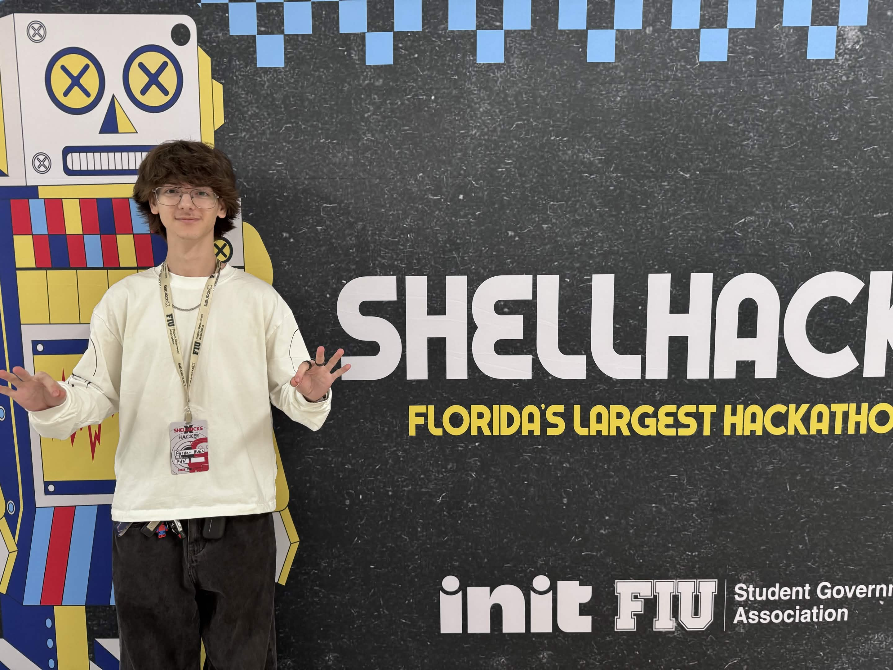
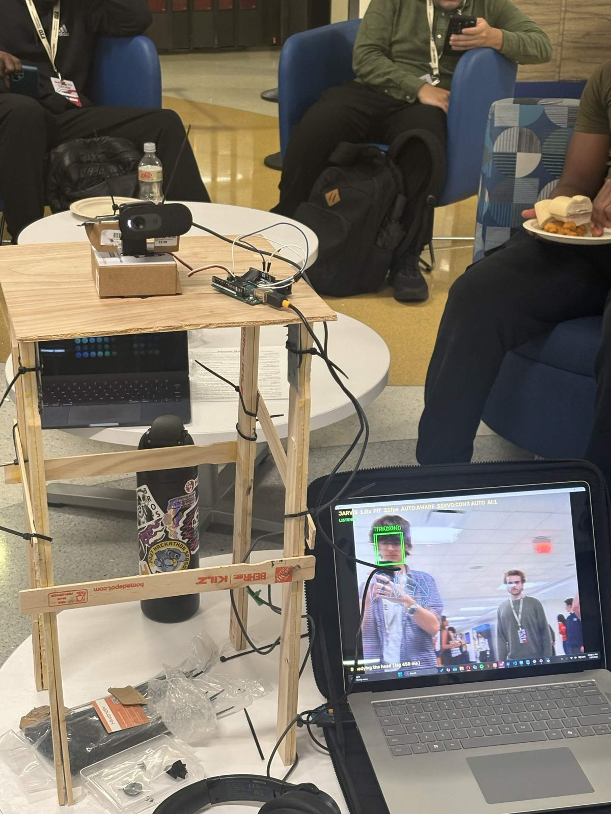
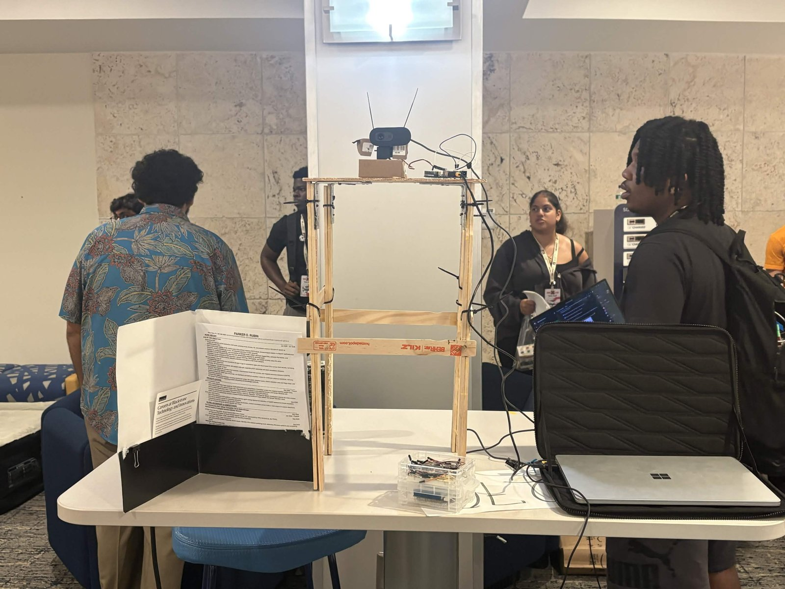
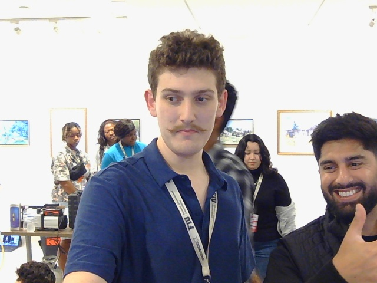
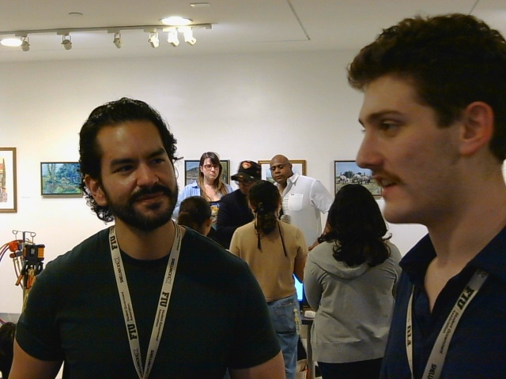
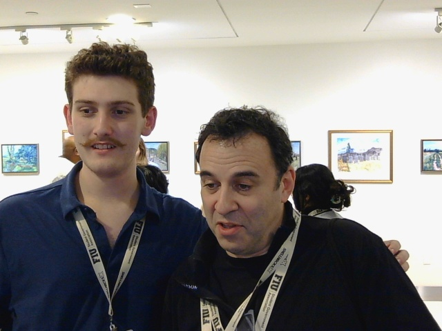
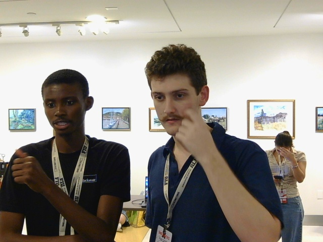
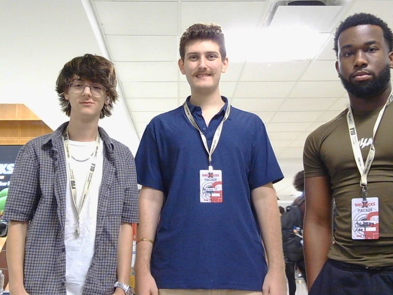
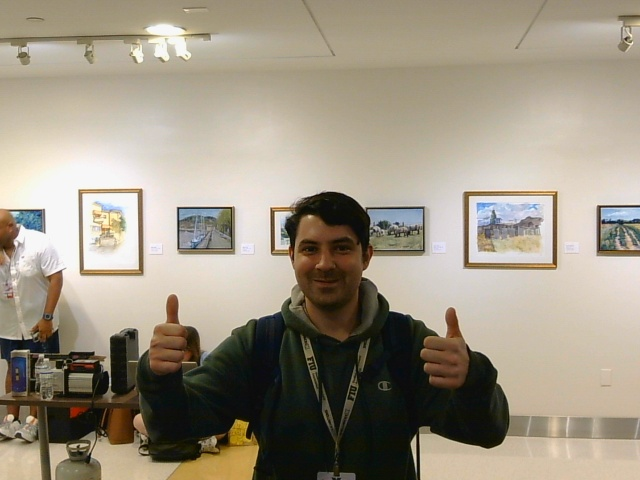

ShellHacks is Florida's largest hackathon, a weekend at FIU of building something from nothing and demoing it to judges and sponsors on Sunday. I went in planning to build an AI voice clone detector, pivoted partway through the weekend, and came out with JARVIS: a desk robot you talk to that can see through its camera, turn to follow you, and actually do things on your computer when you ask.
What JARVIS does
Most AI assistants live in a chat window and have no idea what's happening in the room. JARVIS sits on the desk instead. You talk to it out loud, and it can:
- See what you're holding and answer questions about it, read labels, or read what's on your screen
- Follow your face with a servo head, or lock onto any object you point it at and keep that in view
- React to hand gestures: thumbs up takes a photo on a 3, 2, 1 countdown, a peace sign starts and stops recording, an open palm mutes the mic
- Take photos, record video, zoom in on details, copy text it reads to the clipboard, run web searches, and write up a report of the whole session
- Stay quietly aware of who's in front of it, and in proactive mode, speak up on its own when something is actually worth mentioning
Here it is mid-demo. The webcam sits on the servo at the top of the tower with the Arduino wired in next to it, and the laptop shows what JARVIS sees: a green TRACKING box on the person in front of it, a blue skeleton over his hand from the gesture model, and no box at all on the guy walking past in the background. The status line at the bottom reads "Steadying the head (lag 450 ms)", the servo compensating for how late the camera image arrives.

How it's built
The hardware is about as scrappy as it gets. The tower is paint stir sticks and zip ties, the servo and webcam sit on a couple of small boxes on top, and the Surface laptop off to the side runs everything. Behind it was a trifold with my resume and a Blackstone careers flyer.

The software is where most of the work went:
| Piece | What it does |
|---|---|
| ElevenLabs Conversational AI | The voice. Every capability is a tool the agent decides to call on its own, 19 in total |
| Gemini | The eyes: answers questions about the camera and screen, finds objects by name, reads text |
| OpenCV + OpenCV Zoo | Local models for faces (YuNet), hands and gestures (MediaPipe), and object tracking (VitTrack), no API calls |
| Arduino + servo | The head. Python sends angles over serial, the Arduino glides the servo there smoothly |
| Python | Ties it together, with a live camera window, a control bar, keyboard shortcuts, and live captions |
How it works
Every snippet below is trimmed from the real code in the JARVIS repo.
Talking turns into actions. Every Python function JARVIS can run is wrapped with one decorator. It registers the function by name, logs the call, and makes sure a failure comes back as a sentence the agent can say instead of a crash. A setup script pushes the matching list of 19 tool definitions to the ElevenLabs agent, so the model picks which one to call from what you said, no keyword matching.
def tool(fn):
def wrapper(params):
try: out = fn(params)
except QuotaExhausted as e: out = str(e)
except Exception as e: out = f"{fn.__name__} failed: {e}"
return str(out)
TOOLS[fn.__name__] = wrapper
@tool
def look(p):
frame = current_view() # current camera frame, including zoom
... # sent to Gemini with the user's questionPicking one face out of a crowd. YuNet finds every face in the frame, which at a hackathon is a lot of faces. JARVIS keeps only the ones that are big enough and at least 60% the size of the biggest face, so people walking by in the back get dropped. That's why the person walking past in the demo photo has no box.
big = out[0][3] # height of the largest face
out = [b for b in out if b[3] >= FACE_MIN and b[3] >= big * 0.6]
Moving the head. Python only sends a target angle like
112,90 over serial. The Arduino does the motion itself, 66 times a
second: it speeds up gently, cruises, and eases in as it lands, so the head never
jerks. Python mirrors the same four numbers so it knows where the head is mid-turn.
float glide(float pos, int target, float &vel) {
float d = target - pos;
if (fabs(d) <= 0.5 && fabs(vel) <= ACCEL) { vel = 0; return target; }
float want = constrain(d * EASE, -MAX_STEP, MAX_STEP); // speed we'd like
vel += constrain(want - vel, -ACCEL, ACCEL); // ramp toward it
return pos + vel;
}Gestures. The MediaPipe hand models from OpenCV Zoo classify the hand, and each gesture maps to one action. A gesture only counts if it's held for about half a second and the hand belongs to the person JARVIS is tracking, so someone waving in the background can't take a photo.
GESTURE_ACTIONS = {
"ThumbsUp": ("photo in 3", start_photo_countdown),
"Two": ("record", toggle_recording),
"Five": ("mic", toggle_mic),
"ThumbsDown": ("reset", reset_zoom_and_tracking),
}Not talking to itself. The mic sits a foot from the laptop speakers. While JARVIS is speaking, and for a third of a second after, the audio going to the agent is swapped for silence.
if S.mic_muted or time.time() < S.speaking_until + 0.35:
audio = b"\x00" * len(audio) # send silence instead of the echoBefore and after
Both clips were recorded by JARVIS itself, from the camera on its head. The first is from before the tracking was dialed in. Watch the head overshoot, swing past the person in front of it, and swing back, with the whole frame smearing from motion blur.
The second is the finished version. The person stays centered while the room slides past behind them, no overshoot, no hunting back and forth.
The difference came from one idea: stop assuming, and measure. On startup JARVIS nudges the head 8 degrees and watches where the face moves in the image. That tells it which way the servo is mounted, and how long the camera takes to show the move, which is the delay it has to lead by.
ok = (d > 0) == (PAN_DIR > 0) # did the face move the way the model expects?
if not ok: PAN_DIR = -PAN_DIR # servo is mounted the other way, flip itWhat broke, and what I learned from it
Most of the weekend wasn't writing features, it was finding out why the real hardware didn't behave like the plan.
It said the word instead of doing the thing. The first time I asked what it could see, the agent just said "look" out loud. The tool existed but was never properly attached to the agent, so the model treated it as a word. I ended up scripting the entire agent setup so that couldn't drift again.
It talked to itself. The mic picked up JARVIS's own voice from the speakers, so it kept answering itself in a loop. Muting the mic while it speaks, plus a mute toggle, fixed it.
The head ran away. At one point the camera swung all the way to one side and stared at the ceiling. The servo was mounted the opposite way from what the code assumed, so every correction pushed the target further off center. The startup nudge above is the fix.
It wobbled. That's the first clip. The webcam image was arriving later than I'd assumed, so it kept reacting to where the person was a moment ago. Measuring the delay and slowing the servo down with a gentle ramp got it to the second clip.
It chased strangers. In a room full of hackers, the tracker kept jumping to people walking behind me. It now locks onto one main person, ignores small faces in the background, and holds the lock if I briefly turn away.
It ran out of eyes. The free Gemini tier allowed about 20 requests a day, and my background awareness loop burned through that fast. That pushed me to move everything I could onto local models, and to only call the cloud when a question actually needs it.
The people
Every photo below was taken by JARVIS, which is why they're all from the same low angle at webcam quality. Most were a thumbs up at the camera and a 3 second countdown. I got to show it to Waymo and to two people from Blackstone, and it was a good reminder that a working demo starts better conversations than any pitch does.




A friend from the FAU Cybersecurity Club stopped by to check it out too, and the team got in front of it one more time.


Key takeaway
I came in as a security person and left having built a robot, a voice agent, and a computer vision pipeline in one weekend. I used Claude as a coding partner to move faster, but the part I'm proudest of is the debugging: figuring out why a servo runs away, why a camera lies about timing, and how to make an assistant useful without letting it talk over you. The code is on GitHub.
Walking out at night, with the FIU sign lit up blue against the dark, it hit me how much fun the whole weekend was. Tired, a little sleep deprived, and really glad I was there. Thanks to the ShellHacks organizers and every sponsor who stopped by the table.